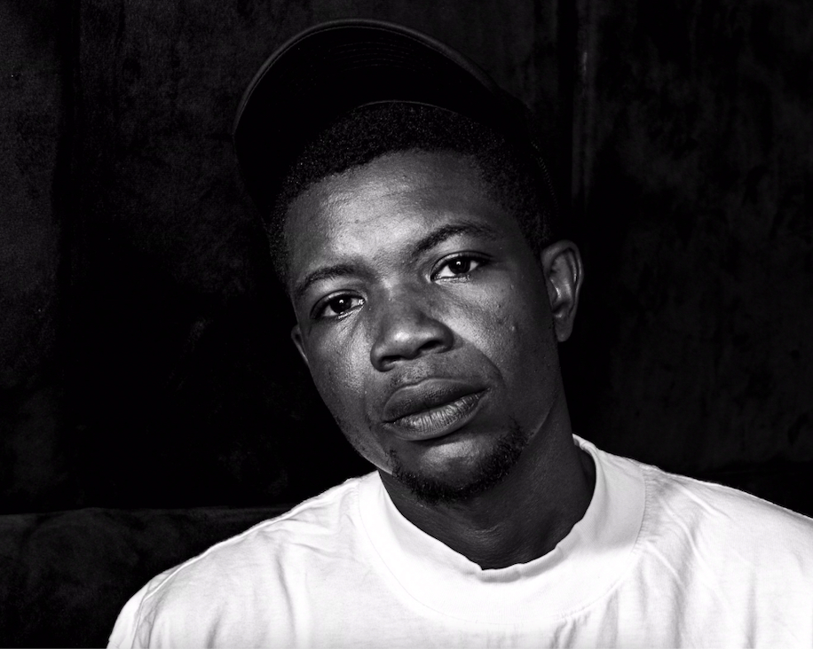

Wale Adesina

Summary
A passionate and creative web designer dedicated to crafting beautiful,
user-friendly websites. With a keen eye for detail and a deep
understanding of design principles, I strive to deliver digital
experiences that are not only visually appealing but also functional and
intuitive.
Education
- Bachelor of Science, Economics - University of Lagos (2018-2024)
Work Experience
- Customer Service Representative - Kiddiewink Luxury Avenue
Nov 2023 - present
-
Managed procurement of inventory to meet customer demands and prevent
stock shortages.
-
Negotiating with suppliers to ensure cost-effective purchasing and
maintained quality standards.
-
Maintaining detailed records of purchases, pricing and inventory
control.
-
Establishing strong supplier relationships to streamline procurement
operations.
- Delivering exceptional customer service to customers.
- Administrative Officer - Barclays Liaison Office(Ikoyi)
Oct 2016 - Mar 2018
-
Oversaw procurement and office supply management to maintain
operational efficiency.
-
Monitored inventory level and initiated timely purchases to avoid
shortages.
- Handled sensitive and confidential information with discretion
- Provided clerical support to various departments.
Skills
- Administative and Organizational Skills
- Problem solving and Critical Thinking
- Teamwork and Collaboration
- Strong Communication and Relationships Management
- Procurement and Vendor Management
- Negotiation and Cost Optimization
- Microsoft word & Excel
Certification
- ALX Professional Foundation Certificate - April 2025
Other
My Hobbies
Contact Me
© Wale Adesina. All Rights Reserved.